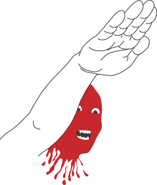
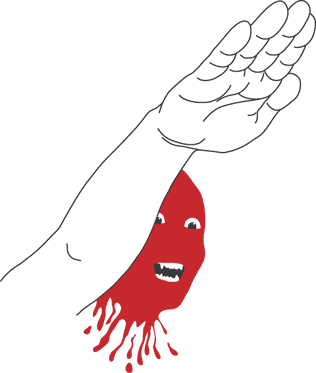

часть 2. Англия. Приложение 1
Рассказ одного знакомого англо-американца, записанный на диктофон
Это было в лагере движения «No Borders» (против расизма, в помощь иммигрантам) в Германии в городе с сильным нацистским движением... Лагерь длился 7 дней... В один из первых вечеров я чистил зубы, как вдруг мы заметили людей в углу лагеря... Была уже глубокая ночь, так что мы не поняли – полиция это или фашисты... Первой реакцией было – убежать, но потом мы сорганизовались и поняли, что нацистов – 20 человек... Всё выглядело очень пафосно: ночь, полнолуние, тени деревьев и нацистов... Нацистов даже нельзя было разглядеть, видны были только тени… Мы решили атаковать... Сначала мы боялись, что за деревьями есть ещё нацисты, но атаковать всё-таки решили... Когда мы подошли близко к ним, они побежали, так что удалось отоварить всего нескольких… Мы решили пропатрулировать прилегающую местность и увидели две машины… Мы подумали, что это машины наци и выбили у них стекла, но утром обнаружилось, что это машины полиции... Также утром пришел брат одного из атаковавших нас ночью нацистов… Он сказал, что его брат-нацист потерял в лагере ключи от дома и свои документы… Он говорил, что сам-то он не нацист, не может попасть домой и просил вернуть ключи... Но ключи ему никто не отдал…